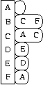

|
 |

adjacency_list<OutEdgeList, VertexList, Directed,
VertexProperties, EdgeProperties,
GraphProperties, EdgeList>
The adjacency_list class implements a generalized adjacency list graph structure. The template parameters provide many configuration options so that you can pick a version of the class that best meets your needs. An adjacency-list is basically a two-dimensional structure, where each element of the first dimension represents a vertex, and each of the vertices contains a one-dimensional structure that is its edge list. Figure 1 shows an adjacency list representation of a directed graph.
The VertexList template parameter of the adjacency_list class controls what kind of container is used to represent the outer two-dimensional container. The OutEdgeList template parameter controls what kind of container is used to represent the edge lists. The choices for OutEdgeList and VertexList will determine the space complexity of the graph structure, and will determine the time complexity of the various graph operations. The possible choices and tradeoffs are discussed in Section Choosing the Edgelist and VertexList.The Directed template parameter controls whether the graph is directed, undirected, or directed with access to both the in-edges and out-edges (which we call bidirectional). The bidirectional graph takes up twice the space (per edge) of a directed graph since each edge will appear in both an out-edge and in-edge list. Figure 2 shows an adjacency list representation of an undirected graph.
A tutorial on how to use the adjacency_list class is in Section Using adjacency_list.
The example in examples/family-tree-eg.cpp shows how to represent a family tree with a graph.
| Parameter | Description | Default |
|---|---|---|
| OutEdgeList | The selector for the container used to represent the edge-list for each of the vertices. | vecS |
| VertexList | The selector for the container used to represent the vertex-list of the graph. | vecS |
| Directed | A selector to choose whether the graph is directed, undirected, or directed with bidirectional edge access (access to both out-edges and in-edges). The options are directedS, undirectedS, and bidirectionalS. | directedS |
| VertexProperties | for specifying internal property storage. | no_property |
| EdgeProperties | for specifying internal property storage. | no_property |
| GraphProperties | for specifying property storage for the graph object. | no_property |
| EdgeList | The selector for the container used to represent the edge-list for the graph. | listS |
VertexAndEdgeListGraph, MutablePropertyGraph, CopyConstructible, Assignable, and Serializable.
boost/graph/adjacency_list.hpp
Also, the serialization functionality is in
boost/graph/adj_list_serialize.hpp.
Properties such as color, distance, weight, and user-defined properties can be attached to the vertices and edges of the graph using properties. The property values can be read from and written to via the property maps provided by the graph. The property maps are obtained via the get(property, g) function. How to use properties is described in Section Internal Properties . The property maps are objects that implement the interface defined in Section Property Map Concepts or may be bundled properties, which have a more succinct syntax. The types of all property values must be Copy Constructible, Assignable, and Default Constructible. The property maps obtained from the adjacency_list class are models of the Lvalue Property Map concept. If the adjacency_list is const, then the property map is constant, otherwise the property map is mutable.
If the VertexList of the graph is vecS, then the graph has a builtin vertex indices accessed via the property map for the vertex_index_t property. The indices fall in the range [0, num_vertices(g)) and are contiguous. When a vertex is removed the indices are adjusted so that they retain these properties. Some care must be taken when using these indices to access exterior property storage. The property map for vertex index is a model of Readable Property Map.
typedef adjacency_list<listS, vecS> Graph; // VertexList=vecS
Graph G(N);
// Fill in the graph...
// Attempt to remove all the vertices. Wrong!
graph_traits<Graph>::vertex_iterator vi, vi_end;
for (tie(vi, vi_end) = vertices(G); vi != vi_end; ++vi)
remove_vertex(*vi, G);
// Remove all the vertices. This is still wrong!
graph_traits<Graph>::vertex_iterator vi, vi_end, next;
tie(vi, vi_end) = vertices(G);
for (next = vi; vi != vi_end; vi = next) {
++next;
remove_vertex(*vi, G);
}
The reason this is a problem is that we are invoking
remove_vertex(), which when used with an
adjacency_list where VertexList=vecS, invalidates
all iterators and descriptors for the graph (such as vi and
vi_end), thereby causing trouble in subsequent iterations of
the loop.
If we use a different kind of adjacency_list, where VertexList=listS, then the iterators are not invalidated by calling remove_vertex unless the iterator is pointing to the actual vertex that was removed. The following code demonstrates this.
typedef adjacency_list<listS, listS> Graph; // VertexList=listS
Graph G(N);
// Fill in the graph...
// Attempt to remove all the vertices. Wrong!
graph_traits<Graph>::vertex_iterator vi, vi_end;
for (tie(vi, vi_end) = vertices(G); vi != vi_end; ++vi)
remove_vertex(*vi, G);
// Remove all the vertices. This is OK.
graph_traits<Graph>::vertex_iterator vi, vi_end, next;
tie(vi, vi_end) = vertices(G);
for (next = vi; vi != vi_end; vi = next) {
++next;
remove_vertex(*vi, G);
}
The stability issue also affects vertex and edge descriptors. For example, suppose you use vector of vertex descriptors to keep track of the parents (or predecessors) of vertices in a shortest paths tree (see examples/dijkstra-example.cpp). You create the parent vector with a call to dijkstra_shortest_paths(), and then remove a vertex from the graph. Subsequently you try to use the parent vector, but since all vertex descriptors have become invalid, the result is incorrect.
std::vector<Vertex> parent(num_vertices(G));
std::vector<Vertex> distance(num_vertices(G));
dijkstra_shortest_paths(G, s, distance_map(&distance[0]).
predecessor_map(&parent[0]));
remove_vertex(s, G); // Bad idea! Invalidates vertex descriptors in parent vector.
// The following will produce incorrect results
for(tie(vi, vend) = vertices(G); vi != vend; ++vi)
std::cout << p[*vi] << " is the parent of " << *vi << std::endl;
Note that in this discussion iterator and descriptor invalidation is concerned with the invalidation of iterators and descriptors that are not directly affected by the operation. For example, performing remove_edge(u, v, g) will always invalidate any edge descriptor for (u,v) or edge iterator pointing to (u,v), regardless of the kind adjacency_list. In this discussion of iterator and descriptor invalidation, we are only concerned with the affect of remove_edge(u, v, g) on edge descriptors and iterators that point to other edges (not (u,v)).
In general, if you want your vertex and edge descriptors to be stable (never invalidated) then use listS or setS for the VertexList and OutEdgeList template parameters of adjacency_list. If you are not as concerned about descriptor and iterator stability, and are more concerned about memory consumption and graph traversal speed, use vecS for the VertexList and/or OutEdgeList template parameters.
The following table summarizes which operations cause descriptors and iterators to become invalid. In the table, EL is an abbreviation for OutEdgeList and VL means VertexList. The Adj Iter category includes the out_edge_iterator, in_edge_iterator, and adjacency_iterator types. A more detailed description of descriptor and iterator invalidation is given in the documentation for each operation.
| Function | Vertex Desc | Edge Desc | Vertex Iter | Edge Iter | Adj Iter |
|---|---|---|---|---|---|
| add_edge() | OK | OK | OK | EL=vecS && Directed=directedS |
EL=vecS |
| remove_edge() remove_edge_if() remove_out_edge_if() remove_in_edge_if() clear_vertex() |
OK | OK | OK | EL=vecS && Directed=directedS |
EL=vecS |
| add_vertex() | OK | OK | OK | VL=vecS && Directed=directedS |
VL=vecS && Directed=directedS |
| remove_vertex() | VL=vecS | VL=vecS | VL=vecS | VL=vecS | VL=vecS |
adjacency_list(const GraphProperty& p = GraphProperty())Default constructor. Creates an empty graph object with zero vertices and zero edges.
adjacency_list(const adjacency_list& x)Copy constructor. Creates a new graph that is a copy of graph x, including the edges, vertices, and properties.
adjacency_list& operator=(const adjacency_list& x)Assignment operator. Makes this graph a copy of graph x, including the edges, vertices, and properties.
adjacency_list(vertices_size_type n,
const GraphProperty& p = GraphProperty())
Creates a graph object with n vertices and zero edges.
template <class EdgeIterator>
adjacency_list(EdgeIterator first, EdgeIterator last,
vertices_size_type n,
edges_size_type m = 0,
const GraphProperty& p = GraphProperty())
Creates a graph object with n vertices and with the edges
specified in the edge list given by the range [first, last).
The EdgeIterator must be a model of InputIterator.
The value type of the EdgeIterator must be a
std::pair, where the type in the pair is an integer type. The
integers will correspond to vertices, and they must all fall in the
range of [0, n).
template <class EdgeIterator, class EdgePropertyIterator>
adjacency_list(EdgeIterator first, EdgeIterator last,
EdgePropertyIterator ep_iter,
vertices_size_type n,
edges_size_type m = 0,
const GraphProperty& p = GraphProperty())
Creates a graph object with n vertices and with the edges
specified in the edge list given by the range [first, last).
The EdgeIterator and EdgePropertyIterator must be a
model of InputIterator.
The value type of the EdgeIterator must be a
std::pair, where the type in the pair is an integer type. The
integers will correspond to vertices, and they must all fall in the
range of [0, n). The value_type of the
ep_iter should be EdgeProperties.
void clear()Remove all of the edges and vertices from the graph.
void swap(adjacency_list& x)Swap the vertices, edges, and properties of this graph with the vertices, edges, and properties of graph x.
std::pair<vertex_iterator, vertex_iterator> vertices(const adjacency_list& g)Returns an iterator-range providing access to the vertex set of graph g.
std::pair<edge_iterator, edge_iterator> edges(const adjacency_list& g)Returns an iterator-range providing access to the edge set of graph g.
std::pair<adjacency_iterator, adjacency_iterator> adjacent_vertices(vertex_descriptor u, const adjacency_list& g)Returns an iterator-range providing access to the vertices adjacent to vertex u in graph g. For example, if u -> v is an edge in the graph, then v will be in this iterator-range.
std::pair<inv_adjacency_iterator, inv_adjacency_iterator> inv_adjacent_vertices(vertex_descriptor u, const adjacency_list& g)Returns an iterator-range providing access to the vertices in graph g to which u is adjacent. (inv is for inverse.) For example, if v -> u is an edge in the graph, then v will be in this iterator range. This function is only available for bidirectional and undirected adjacency_list's.
std::pair<out_edge_iterator, out_edge_iterator> out_edges(vertex_descriptor u, const adjacency_list& g)Returns an iterator-range providing access to the out-edges of vertex u in graph g. If the graph is undirected, this iterator-range provides access to all edges incident on vertex u. For both directed and undirected graphs, for an out-edge e, source(e, g) == u and target(e, g) == v where v is a vertex adjacent to u.
std::pair<in_edge_iterator, in_edge_iterator> in_edges(vertex_descriptor v, const adjacency_list& g)Returns an iterator-range providing access to the in-edges of vertex v in graph g. This operation is only available if bidirectionalS was specified for the Directed template parameter. For an in-edge e, target(e, g) == v and source(e, g) == u for some vertex u that is adjacent to v, whether the graph is directed or undirected.
vertex_descriptor source(edge_descriptor e, const adjacency_list& g)Returns the source vertex of edge e.
vertex_descriptor target(edge_descriptor e, const adjacency_list& g)Returns the target vertex of edge e.
degree_size_type out_degree(vertex_descriptor u, const adjacency_list& g)Returns the number of edges leaving vertex u.
degree_size_type in_degree(vertex_descriptor u, const adjacency_list& g)Returns the number of edges entering vertex u. This operation is only available if bidirectionalS was specified for the Directed template parameter.
vertices_size_type num_vertices(const adjacency_list& g)Returns the number of vertices in the graph g.
edges_size_type num_edges(const adjacency_list& g)Returns the number of edges in the graph g.
vertex_descriptor vertex(vertices_size_type n, const adjacency_list& g)Returns the nth vertex in the graph's vertex list.
std::pair<edge_descriptor, bool>
edge(vertex_descriptor u, vertex_descriptor v,
const adjacency_list& g)
If an edge from vertex u to vertex v exists, return a pair
containing one such edge and true. If there are no edges between
u and v, return a pair with an arbitrary edge descriptor and
false.
std::pair<out_edge_iterator, out_edge_iterator>
edge_range(vertex_descriptor u, vertex_descriptor v,
const adjacency_list& g)
Returns a pair of out-edge iterators that give the range for
all the parallel edges from u to v. This
function only works when the OutEdgeList for the
adjacency_list is a container that sorts the
out edges according to target vertex, and allows for
parallel edges. The multisetS selector chooses
such a container.
std::pair<edge_descriptor, bool>
add_edge(vertex_descriptor u, vertex_descriptor v,
adjacency_list& g)
Adds edge (u,v) to the graph and returns the edge descriptor
for the new edge. For graphs that do not allow parallel edges, if the
edge is already in the graph then a duplicate will not be added and
the bool flag will be false. When the flag is
false, the
returned edge descriptor points to the already existing edge.
The placement of the new edge in the out-edge list is in general unspecified, though ordering of the out-edge list can be accomplished through the choice of OutEdgeList. If the VertexList selector is vecS, and if either vertex descriptor u or v (which are integers) has a value greater than the current number of vertices in the graph, the graph is enlarged so that the number of vertices is std::max(u,v) + 1.
If the OutEdgeList selector is vecS then this operation will invalidate any out_edge_iterator for vertex u. This also applies if the OutEdgeList is a user-defined container that invalidates its iterators when push(container, x) is invoked (see Section Customizing the Adjacency List Storage). If the graph is also bidirectional then any in_edge_iterator for v is also invalidated. If instead the graph is undirected then any out_edge_iterator for v is also invalidated. If instead the graph is directed, then add_edge() also invalidates any edge_iterator.
std::pair<edge_descriptor, bool>
add_edge(vertex_descriptor u, vertex_descriptor v,
const EdgeProperties& p,
adjacency_list& g)
Adds edge (u,v) to the graph and attaches p as the
value of the edge's internal property storage. Also see the previous
add_edge() member function for more details.
void remove_edge(vertex_descriptor u, vertex_descriptor v,
adjacency_list& g)
Removes the edge (u,v) from the graph.
This operation causes any outstanding edge descriptors or iterators that point to edge (u,v) to become invalid. In addition, if the OutEdgeList selector is vecS then this operation will invalidate any iterators that point into the edge-list for vertex u and also for vertex v in the undirected and bidirectional case. Also, for directed graphs this invalidates any edge_iterator.
void remove_edge(edge_descriptor e, adjacency_list& g)Removes the edge e from the graph. This differs from the remove_edge(u, v, g) function in the case of a multigraph. This remove_edge(e, g) function removes a single edge, whereas the remove_edge(u, v, g) function removes all edges (u,v).
This operation invalidates any outstanding edge descriptors and iterators for the same edge pointed to by descriptor e. In addition, this operation will invalidate any iterators that point into the edge-list for the target(e, g). Also, for directed graphs this invalidates any edge_iterator for the graph.
void remove_edge(out_edge_iterator iter, adjacency_list& g)This has the same effect as remove_edge(*iter, g). The difference is that this function has constant time complexity in the case of directed graphs, whereas remove_edge(e, g) has time complexity O(E/V).
template <class Predicate>
void remove_out_edge_if(vertex_descriptor u, Predicate predicate,
adjacency_list& g)
Removes all out-edges of vertex u from the graph that satisfy
the predicate. That is, if the predicate returns true when
applied to an edge descriptor, then the edge is removed.
The affect on descriptor and iterator stability is the same as that of invoking remove_edge() on each of the removed edges.
template <class Predicate>
void remove_in_edge_if(vertex_descriptor v, Predicate predicate,
adjacency_list& g)
Removes all in-edges of vertex v from the graph that satisfy
the predicate. That is, if the predicate returns true when
applied to an edge descriptor, then the edge is removed.
The affect on descriptor and iterator stability is the same as that of invoking remove_edge() on each of the removed edges.
This operation is available for undirected and bidirectional adjacency_list graphs, but not for directed.
template <class Predicate> void remove_edge_if(Predicate predicate, adjacency_list& g)Removes all edges from the graph that satisfy the predicate. That is, if the predicate returns true when applied to an edge descriptor, then the edge is removed.
The affect on descriptor and iterator stability is the same as that of invoking remove_edge() on each of the removed edges.
vertex_descriptor add_vertex(adjacency_list& g)Adds a vertex to the graph and returns the vertex descriptor for the new vertex.
vertex_descriptor
add_vertex(const VertexProperties& p,
adjacency_list& g)
Adds a vertex to the graph with the specified properties. Returns the
vertex descriptor for the new vertex.
void clear_vertex(vertex_descriptor u, adjacency_list& g)Removes all edges to and from vertex u. The vertex still appears in the vertex set of the graph.
The affect on descriptor and iterator stability is the same as that of invoking remove_edge() for all of the edges that have u as the source or target.
void clear_out_edges(vertex_descriptor u, adjacency_list& g)Removes all out-edges from vertex u. The vertex still appears in the vertex set of the graph.
The affect on descriptor and iterator stability is the same as that of invoking remove_edge() for all of the edges that have u as the source.
This operation is not applicable to undirected graphs (use clear_vertex() instead).
void clear_in_edges(vertex_descriptor u, adjacency_list& g)Removes all in-edges from vertex u. The vertex still appears in the vertex set of the graph.
The affect on descriptor and iterator stability is the same as that of invoking remove_edge() for all of the edges that have u as the target.
This operation is only applicable to bidirectional graphs.
void remove_vertex(vertex_descriptor u, adjacency_list& g)Remove vertex u from the vertex set of the graph. It is assumed that there are no edges to or from vertex u when it is removed. One way to make sure of this is to invoke clear_vertex() beforehand.
If the VertexList template parameter of the adjacency_list was vecS, then all vertex descriptors, edge descriptors, and iterators for the graph are invalidated by this operation. The builtin vertex_index_t property for each vertex is renumbered so that after the operation the vertex indices still form a contiguous range [0, num_vertices(g)). If you are using external property storage based on the builtin vertex index, then the external storage will need to be adjusted. Another option is to not use the builtin vertex index, and instead use a property to add your own vertex index property. If you need to make frequent use of the remove_vertex() function the listS selector is a much better choice for the VertexList template parameter.
template <class PropertyTag> property_map<adjacency_list, PropertyTag>::type get(PropertyTag, adjacency_list& g) template <class PropertyTag> property_map<adjacency_list, Tag>::const_type get(PropertyTag, const adjacency_list& g)Returns the property map object for the vertex property specified by PropertyTag. The PropertyTag must match one of the properties specified in the graph's VertexProperty template argument.
template <class PropertyTag, class X> typename property_traits<property_map<adjacency_list, PropertyTag>::const_type>::value_type get(PropertyTag, const adjacency_list& g, X x)This returns the property value for x, where x is either a vertex or edge descriptor.
template <class PropertyTag, class X, class Value> void put(PropertyTag, const adjacency_list& g, X x, const Value& value)This sets the property value for x to value. x is either a vertex or edge descriptor. Value must be convertible to typename property_traits<property_map<adjacency_list, PropertyTag>::type>::value_type
template <class GraphProperties, class GraphPropertyTag> typename graph_property<adjacency_list, GraphPropertyTag>::type& get_property(adjacency_list& g, GraphPropertyTag);Return the property specified by GraphPropertyTag that is attached to the graph object g. The graph_property traits class is defined in boost/graph/adjacency_list.hpp.
template <class GraphProperties, class GraphPropertyTag> const typename graph_property<adjacency_list, GraphPropertyTag>::type& get_property(const adjacency_list& g, GraphPropertyTag);Return the property specified by GraphPropertyTag that is attached to the graph object g. The graph_property traits class is defined in boost/graph/adjacency_list.hpp.
template<class SavingArchive> SavingArchive& operator<<(SavingArchive& ar, const adjacency_list& graph);Serializes the graph into the archive. Requires the vertex and edge properties of the graph to be Serializable.
template<class LoadingArchive> LoadingArchive& operator>>(LoadingArchive& ar, const adjacency_list& graph);Reads the graph from the archive. Requires the vertex and edge properties of the graph to be Serializable.
| Copyright © 2000-2001 |
Jeremy Siek,
Indiana University (jsiek@osl.iu.edu) Lie-Quan Lee, Indiana University (llee@cs.indiana.edu) Andrew Lumsdaine, Indiana University (lums@osl.iu.edu) |